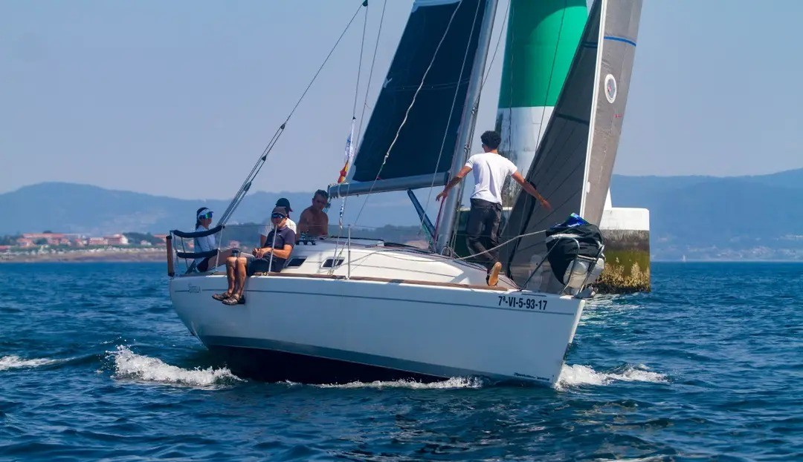
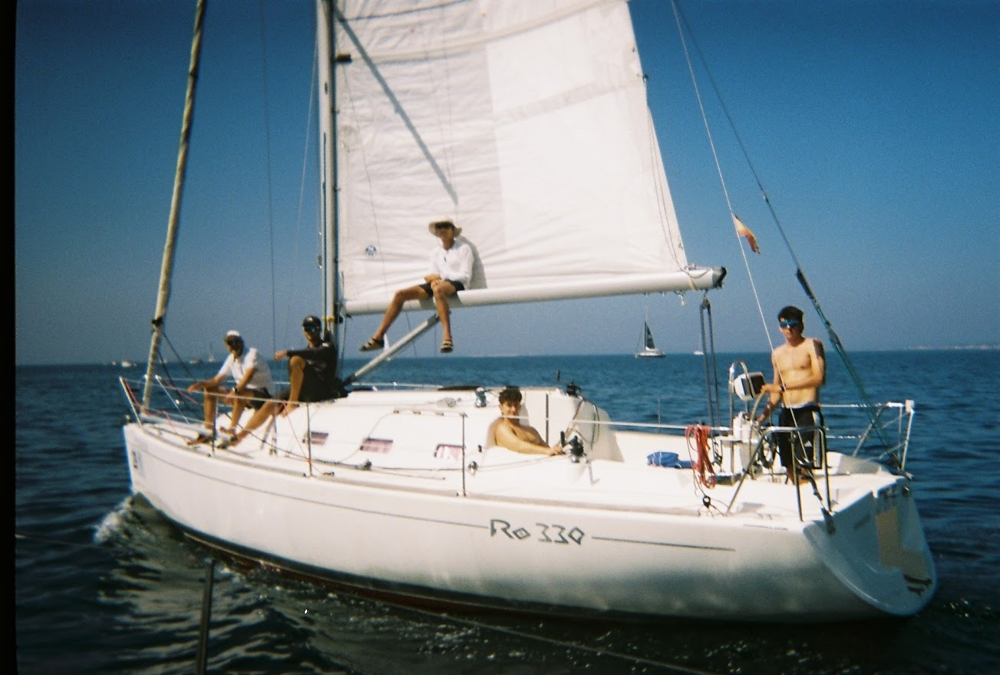
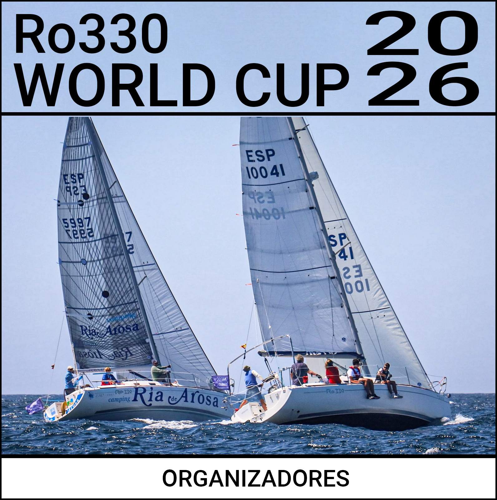

<!DOCTYPE html>
<html lang="es">
<head>
    <link rel="icon" href="img/Icon.png" type="image/png">
    <meta charset="UTF-8">
    <meta name="viewport" content="width=device-width, initial-scale=1.0">
    <title>Competición Ro330</title>
    <link rel="stylesheet" href="css/style.css">
</head>
<script src="js/main.js"></script>
</body>
</html>
<body>

<header>
    <a href="index.html" class="logo">Ro330 CLASS</a>

    <button class="nav-toggle" aria-label="Abrir menú" aria-expanded="false">
        <span class="hamburger-line"></span>
        <span class="hamburger-line"></span>
        <span class="hamburger-line"></span>
    </button>

    <ul class="nav-links">
        <li><a href="index.html">Inicio</a></li>
        <li><a href="competicion.html"class="active">Competición</a></li>
        <li><a href="reglamento.html">Reglas de clase</a></li>
        <li><a href="documentacion.html">Documentación</a></li>
    </ul>
</header>


<main>

    <!-- HERO -->
    <section class="hero" style="background-image: url('img/bannerC.jpg'); background-position: bottom;">
        <div class="hero-content">
            <h1>Competición</h1>
            <p></p>
        </div>
    </section>

    <!-- INTRO -->
    <section class="container">
        <div class="section-header">
            <h2>Introducción</h2>
        </div>
        <p style="max-width: 800px; margin: 0 auto; text-align: justify; font-weight: 300; font-size: 1.1rem; line-height: 1.7;">
            La competición propuesta para la Clase Ro330 es, por el momento, un proyecto 
            <strong>hipotético y en fase de desarrollo</strong>, ya que actualmente no se dispone 
            de apoyo institucional, logístico ni organizativo para establecer un circuito oficial propio. 
            El objetivo es <strong>explorar y teorizar</strong> cómo podría estructurarse una actividad 
            deportiva específica para esta clase.
            <br><br>
            Para <strong>reducir costes y simplificar la organización</strong>, una alternativa razonable 
            sería que la Clase Ro330 no celebrase una regata exclusiva, sino que participase como 
            <strong>clase integrada dentro de eventos ya existentes</strong>, compartiendo campo de regatas 
            con otras flotas. Este modelo es habitual en clases monotipo consolidadas, como los J/80, 
            que compiten frecuentemente dentro de regatas abiertas con clasificación propia.
        </p>
    </section>
    <section class="container alt-bg">
    <div class="section-header">
        <h2>Por qué</h2>
    </div>

    <p style="max-width: 800px; margin: 0 auto; text-align: justify; font-weight: 300; line-height: 1.7;">
        La siguiente propuesta surge como un ejercicio teórico para explorar cómo podría estructurarse una posible
        competición específica para la Clase Ro330. Aunque el proyecto es únicamente hipotético, permite evaluar la
        viabilidad de crear una flota organizada, aprovechar el potencial de los barcos existentes y ofrecer a los
        armadores un entorno de competición más equilibrado y atractivo.
        <br><br>
        El Ro330 es un barco relativamente abundante, especialmente en determinadas zonas como Galicia, y presenta
        unas prestaciones muy competitivas que lo convierten en un candidato natural para desarrollar una clase
        monotipo. La concentración de unidades activas facilita reunir una flota numerosa sin grandes desplazamientos
        y, por tanto, aumenta significativamente la viabilidad de un proyecto de este tipo.
        <br><br>
        Además, establecer una clase monotipo permitiría competir <strong>en tiempo real</strong>, un formato mucho
        más atractivo y claro para participantes y espectadores en comparación con los sistemas de <strong>tiempo
        compensado ORC</strong>. El monotipo iguala el rendimiento entre barcos, destaca la habilidad de las
        tripulaciones y hace que cada maniobra y cada decisión táctica tengan un impacto directo en la clasificación.
        Esto no solo eleva la emoción de las regatas, sino que también refuerza la identidad de la clase y fomenta
        un mayor sentido de comunidad entre los armadores.
    </p>
</section>

    <!-- C1 y C2 EN PARALELO -->
<section class="image-row">
    <div class="image-wrapper">
        
    </div>
    <div class="image-wrapper">
        
    </div>
</section>

    <!-- UBICACIÓN -->
    <section class="container alt-bg">
        <div class="section-header">
            <h2>Ubicación</h2>
        </div>
        <div style="max-width: 800px; margin: 0 auto; font-size: 1.1rem; font-weight: 300; line-height: 1.7; text-align: justify;">

            <h3 style="text-transform: uppercase; letter-spacing: 0.1em; font-size: 1.2rem; margin-bottom: 15px; font-weight: 600; text-align: left;">
                Galicia como sede ideal
            </h3>

            <p>
                Galicia se presenta como una candidata especialmente adecuada para acoger una futura competición
                de la Clase Ro330, gracias a la concentración de unidades, la infraestructura existente y sus
                condiciones de navegación.
            </p>

            <h4 style="margin-top: 25px; margin-bottom: 10px; font-weight: 600; letter-spacing: 0.05em; text-align: left;">
                1. Alta concentración de Ro330
            </h4>
            <p>
                La mayor densidad de Ro330 en activo se encuentra en Galicia, antigua sede del astillero Ronáutica.
                Muchos barcos compiten ya en regatas de club, por lo que existe una base sólida de armadores con
                experiencia e interés en una futura clase monotipo.
            </p>

            <h4 style="margin-top: 25px; margin-bottom: 10px; font-weight: 600; letter-spacing: 0.05em; text-align: left;">
                2. Gran número de regatas locales
            </h4>
            <p>
                La costa gallega cuenta con un calendario muy amplio de regatas de club, lo que aumenta
                considerablemente la viabilidad de integrar la Clase Ro330 en pruebas ya existentes con
                clasificación propia y bajo coste organizativo.
            </p>

            <h4 style="margin-top: 25px; margin-bottom: 10px; font-weight: 600; letter-spacing: 0.05em; text-align: left;">
                3. Red de clubes náuticos con interés potencial
            </h4>
            <p>
                Galicia dispone de numerosos clubes náuticos con experiencia organizativa. Es razonable pensar
                que alguno estaría interesado en adoptar esta clase, obteniendo prestigio como sede de una flota
                monotipo y, eventualmente, de un <strong>Campeonato Mundial Ro330</strong>, dado que los barcos
                existentes se concentran en España.
            </p>

            <h4 style="margin-top: 25px; margin-bottom: 10px; font-weight: 600; letter-spacing: 0.05em; text-align: left;">
                4. Condiciones perfectas para regatear
            </h4>
            <p>
                Las rías gallegas ofrecen un entorno excepcional para la navegación: áreas protegidas, zonas de
                mar abierto y condiciones meteorológicas muy favorables durante todo el año. Esto convierte a
                Galicia en un escenario ideal, técnico y variado para la competición monotipo.
            </p>

            <h4 style="margin-top: 25px; margin-bottom: 10px; font-weight: 600; letter-spacing: 0.05em; text-align: left;">
                5. Concentración ORC activa en Galicia
            </h4>
            <p>
                Entre todos los Ro330 que cuentan con certificado ORC vigente, una mayoría claramente dominante
                está registrada y compite en Galicia. Esta concentración facilita enormemente atraer a regatistas
                ya activos, reduciendo las barreras logísticas y fomentando la participación en una futura clase
                monotipo sin necesidad de grandes desplazamientos.
            </p>

        </div>
    </section>

    <!-- CUÁNDO -->


    <!-- VIABILIDAD -->
    <section class="container">
        <div class="section-header">
            <h2>Viabilidad</h2>
        </div>

        <!-- BLOQUE ÚNICO ALINEADO -->
        <div style="max-width: 800px; margin: 0 auto;">
            <p style="text-align: justify; font-weight: 300; line-height: 1.7; margin-bottom: 2rem;">
                Para que el proyecto sea viable, es imprescindible contar con los siguientes tres pilares fundamentales:
            </p>

            <h3 style="margin-bottom: 0.5rem;">Colaboración de los armadores</h3>
            <p style="text-align: justify; font-weight: 300; line-height: 1.7;">
                La viabilidad de una competición para la Clase Ro330 depende en gran medida del compromiso de los propios
                armadores. Su participación activa es esencial para consolidar una flota estable, garantizar una asistencia
                mínima en cada evento y generar una comunidad que dé continuidad al proyecto. Sin la implicación directa
                de los propietarios, cualquier iniciativa monotipo pierde estabilidad y capacidad de crecimiento.
            </p>

            <div style="height: 1.5rem;"></div>

            <h3 style="margin-bottom: 0.5rem;">Colaboración de un organizador</h3>
            <p style="text-align: justify; font-weight: 300; line-height: 1.7;">
                Resulta igualmente necesario contar con un club náutico o comité dispuesto a colaborar, ya sea mediante
                la creación de una clase específica dentro de una regata existente o integrando la Clase Ro330 en su
                calendario oficial. Este modelo permite reducir costes, simplificar la logística y ofrecer una clasificación
                propia sin requerir la organización de un evento independiente. La cooperación organizativa es, por tanto,
                un componente clave para que la competición sea realmente viable.
            </p>

            <div style="height: 1.5rem;"></div>

            <h3 style="margin-bottom: 0.5rem;">Apoyo de patrocinadores o entidades</h3>
            <p style="text-align: justify; font-weight: 300; line-height: 1.7;">
                Además de la implicación directa de armadores y organizadores, puede resultar necesario contar con
                <strong>patrocinadores, instituciones o entidades colaboradoras</strong> que aporten respaldo económico o
                visibilidad al proyecto. Su participación puede facilitar la financiación de materiales, premios, logística
                o acciones de promoción, contribuyendo a que la Clase Ro330 crezca y alcance una estructura competitiva
                más sólida y sostenible a medio plazo.
            </p>
        </div>
    </section>

    <!-- C3 SOLA -->
    <section class="image-break">
        <div class="image-wrapper">
            
        </div>
    </section>

    <!-- CARTEL DE REGATA -->
 <section class="container">
        <div class="section-header">
            <h2>Cartel de Regata</h2>
        </div>        
        <div class="regatta-poster" style="display: flex; justify-content: center; margin-bottom: 40px;">
            
            
        </div>
    </section>

</main>

<footer>
    <p>&copy; 2025 Ro330 Class Association. Sin ningún derecho reservado.</p>
    <p>Diseño conceptual por Anónimo</p>
</footer>

</body>
</html>
